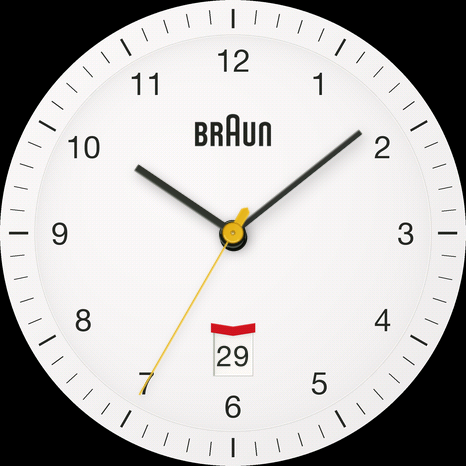

Enable JavaScript to preview faces and connect your watch.
One connection for every face. Browse, preview and install here.
Loading the collection…

No faces match these filters.
Use desktop Chrome or Edge on Windows or Mac, with Bluetooth enabled.
Close other watch connections and keep the watch nearby. If its face list has not arrived, disconnect and reconnect. A full watch needs an existing face selected for replacement.
Installed faces use the watch’s clock and supported sensor readings. Browser weather and activity values are samples; connected battery readings are live. Weather icons are illustrative. Subdials show clock readings. Casio’s AMS marker is fixed to Amsterdam.
Browsing, filtering, previews and this help keep the same connection. Reloading or closing the tab disconnects the watch. Installation history is stored in your browser.
Native format, renderer and Bluetooth client: FMC ↗ · AGPL-3.0 ↗